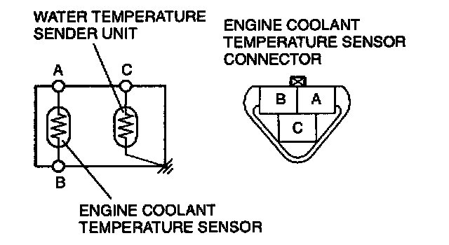
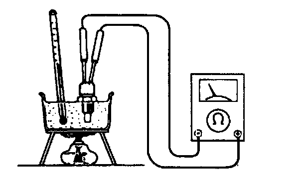
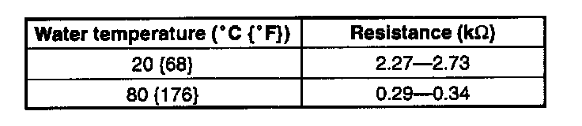
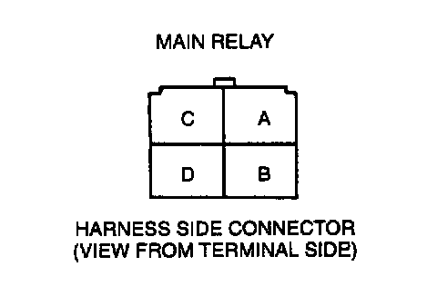
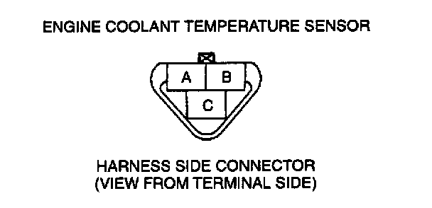
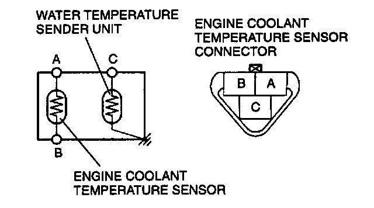
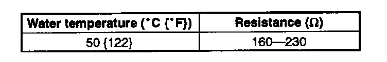

Engine - Coolant Temperature Sensor/Switch: Testing and Inspection
Inspection of ResistanceNOTE:
- Perform the following test only when detected.
1. Drain the engine coolant.
2. Disconnect the engine coolant temperature sensor connector.
3. Remove the engine coolant temperature sensor.


4. Place the sensor in water with a thermometer, and heat the water gradually.
5. Measure the resistance between engine coolant temperature sensor terminals A and B by using an ohmmeter.

Specification
6. If not as specified, replace the engine coolant temperature sensor.
If engine coolant temperature sensor is okay, but PID value is out of specification, inspect as follows:
Open circuit
- Reference voltage circuit (Engine coolant temperature sensor connector terminal A and PCM connector terminal 2E through common connector.)


- Ground circuit (Engine coolant temperature sensor connector terminal B and PCM connector terminal 3F through common connector.)
Short circuit
- Engine coolant temperature sensor connector terminal A and PCM connector terminal 2E through common connector to ground.
7. Reconnect the engine coolant temperature sensor connector.
Water Temperature Sender Unit Inspection
1. Drain the engine coolant.
2. Remove the engine coolant temperature sensor.

3. Place the sensor in water with a thermometer, and heat the water gradually.
4. Measure the resistance between engine coolant temperature sensor terminals C and body ground by using an ohmmeter.

Specification
5. If not as specified, replace the engine coolant temperature sensor.